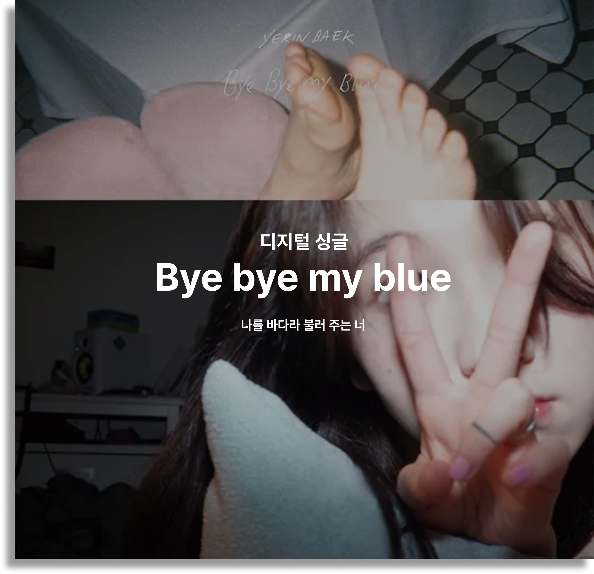
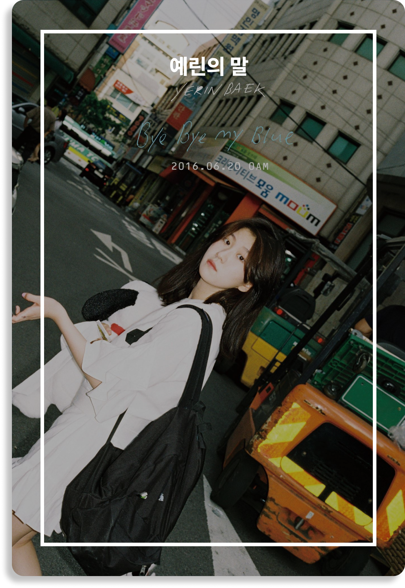
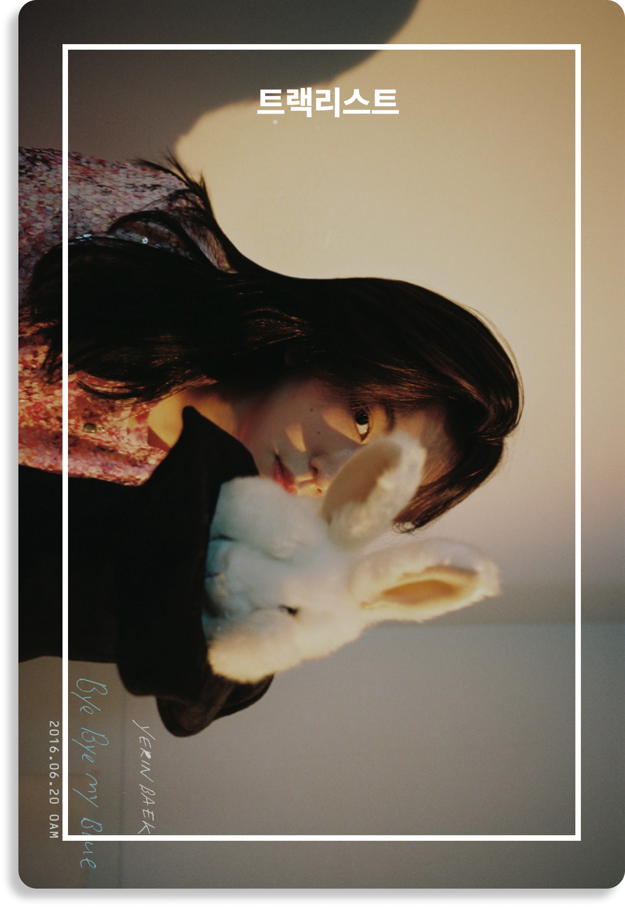
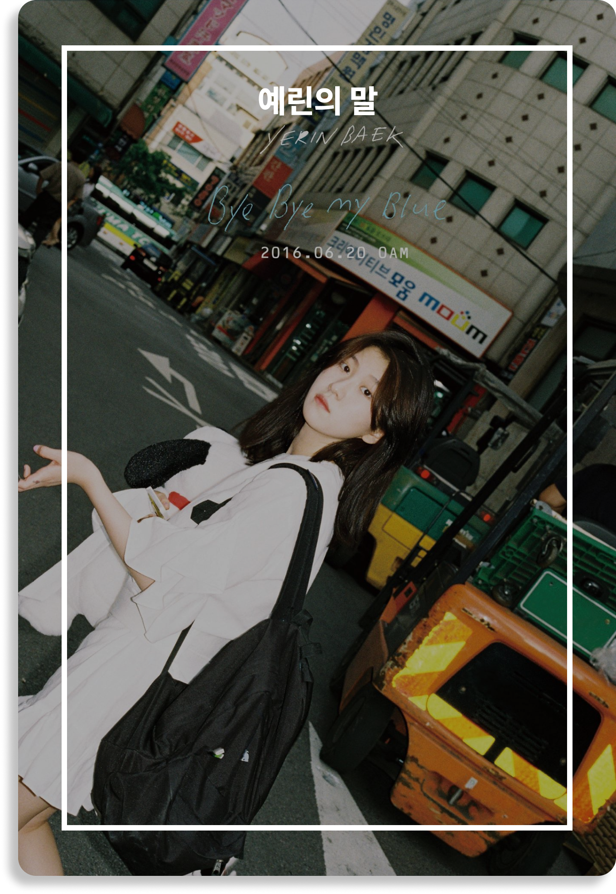
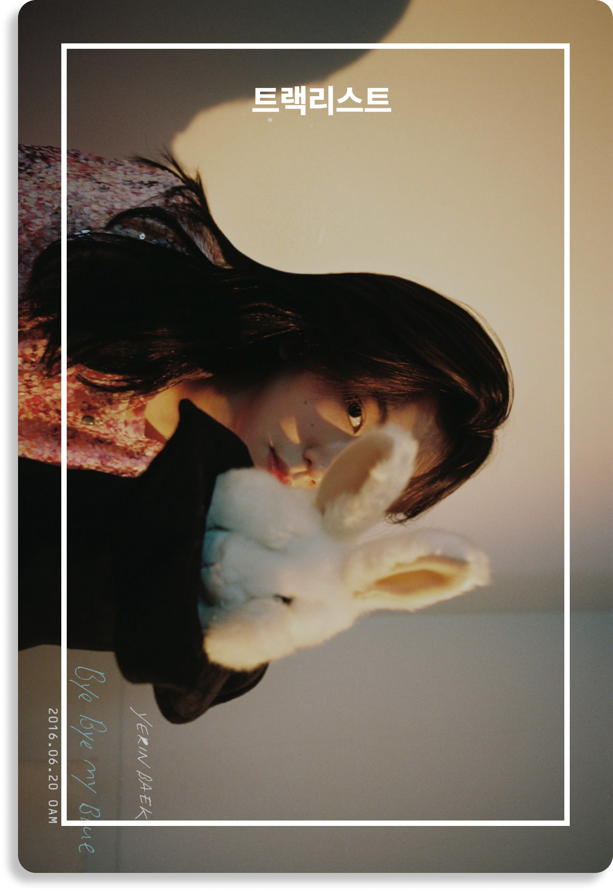

 
 
VINYL Bye bye my blue
'감성 음색 여신' '백예린'이 디지털 싱글 [Bye bye my blue]로 돌아온다.
[Bye bye my blue]는 '백예린'이 "우주를 건너"에 이어 두 번째로 선보이는
디지털 싱글로, 동명의 타이틀곡 "Bye bye my blue"를 포함해 "그의 바다",
"Zero" 총 세 곡이 수록돼 있다.
지난해 발매와 동시에 음원 차트를 휩쓸었던 "우주를 건너" 이후 7개월
만에 발표하는 이번 앨범에서 '백예린'은 특히 그녀만의 감성이 가득 담긴
자작곡 2곡을 함께 수록해 뮤지션으로서 한층 성장한 모습을 유감없이
발휘할 예정이다.
또 '백예린'은 특유의 감성적인 음색을 바탕으로 '여성적 화법'과 '섬세한
작곡 실력'까지 모두 잡으며 차세대 음원 강자로서의 저력을 다시 한번
대중들에게 각인시킬 예정이다.
타이틀곡 "Bye bye my blue"는 부드러운 피아노 선율에 얹어진
'백예린'의 짙은 감성 보이스가 인상적인 R&B 곡으로, "우주를 건너"에서
함께한 '구름'과의 두 번째 협업으로 탄생했다. 특히 "많이 가져도 난 아직
너 같진 않아 아픈 기억들 위로 매일 혼자 걸어 난", "나의 나의 나의
그대여 이름만 불러봐도 맘이 벅차요" 등의 가사가 사랑에 대한 불안하고
애잔한 감정을 고스란히 전달한다.
편안하게 전개되는 잔잔한 멜로디에 뒤이어 후반부에는 파도가 휘몰아치는
듯한 느낌을 주는 "Bye bye my blue"는 '백예린' 특유의 섬세한 가사
전달력과 호소력 짙은 음색이 곁들여지면서 마치 마음을 담아 꾹꾹 눌러쓴
손편지를 읽는 것처럼 감성 충만한 곡으로 완성됐다.
고마워요. 멀리 보아요, 우리! 사실 요번 작업이 정말 재밌었던 이유는
친한 분들과 재밌고 편하게 작업할 수 있어서였습니다.
제가 요즘 생각하는 저에게 가장 이상적인 작품은 이 나이에, 이 시간에,
이 시기에만 할 수 있는 무언가인 것 같아서, 마음 가볍고 저답게 잘한 것
같아서 뿌듯해요! 가사 좋다고 해주셔서 정말 기뻐요. 나는 멀리 볼게요!
1. Bye bye my blue
작사: 구름, 백예린 / 작곡: 구름 / 편곡: 구름
타이틀곡 "Bye bye my blue"는 '백예린'이 지난 앨범 [FRANK]에서 함께
작업한 '구름'과의 두 번째 협업으로 탄생했다. 감성적인 피아노 선율이
인상적인 R&B 곡으로, 후렴부의 '나의 나의 나의 그대여 이름만 불러봐도
맘이 벅차요'라는 가사가 사랑에 대한 불안하고 공허한 감성을 고스란히
전달한다.
2. 그의 바다
작사: 백예린 / 작곡: 백예린, 구름 / 편곡: 구름
"그의 바다"는 물 위를 걷는 듯 귀에 착 감기는 선율과 서정적인 가사가
인상적인 곡으로, '백예린'이 직접 작사와 작곡에 참여했다. 연인과의
관계에서 '바다'로 표현되는 자신을 있는 그대로 사랑해주길 바란다는
노랫말이 감성적인 연애편지를 읽는 듯한 느낌을 전달한다.
3. Zero
작사: 백예린 / 작곡: 백예린, 구름 / 편곡: 구름
'백예린'이 작사, 작곡에 모두 참여한 곡으로, '백예린' 특유의
아련하면서도 감성 짙은 음색을 엿볼 수 있는 매력적인 트랙이다. 행복하고
좋은 일만 일어나지는 않지만 그런 날들 중에 당신이 있기를 바란다는
사랑에 빠진 여성의 순수한 설렘과 바람을 가득 담아 노래했다.